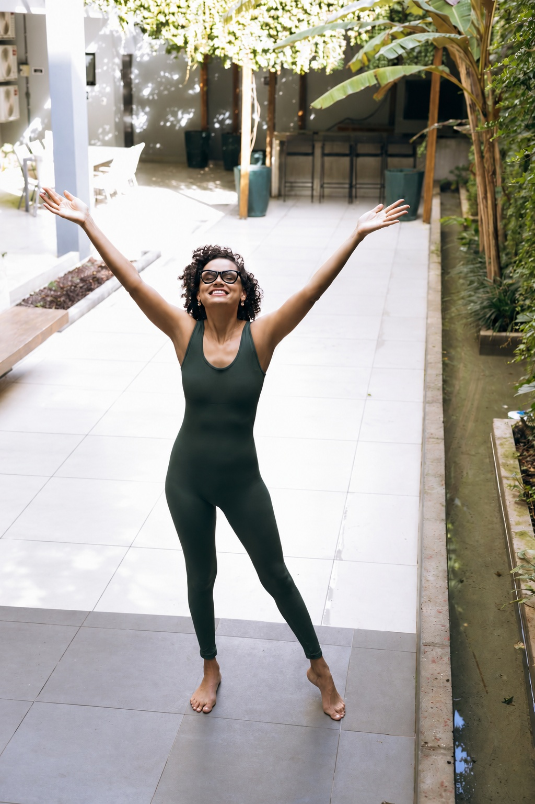
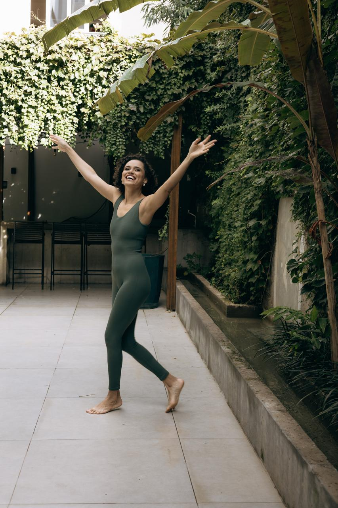

Reconhecer
Perceba o que tem guiado suas escolhas, os padrões que se repetem e o que você aprendeu a carregar sem questionar.
Para a mulher que cansou de procurar respostas em todos os lugares e percebeu que a transformação começa quando ela volta para si.
QUERO CONHECER A EXPERIÊNCIAAcesso online • assista no seu tempo

Talvez precise apenas voltar para si.
Em algum momento, entre responsabilidades, expectativas e versões que você aprendeu a sustentar, é possível se afastar do que sente, do que quer e até de quem você é.
A mudança começa quando você para de buscar todas as respostas fora.
Perceba o que tem guiado suas escolhas, os padrões que se repetem e o que você aprendeu a carregar sem questionar.
Reaproxime-se da sua própria voz, dos seus desejos e da mulher que existe por baixo das expectativas externas.
Transforme consciência em direção para fazer escolhas mais alinhadas com quem você é e com o que quer viver daqui para frente.

Você não precisa de mais uma fórmula dizendo quem deve ser.
A Única Saída é Pra Dentro é uma experiência de desenvolvimento pessoal para ajudar você a olhar com mais clareza para si, compreender seus movimentos internos e começar uma nova fase com mais consciência.
“Antes de decidir o próximo passo, você precisa reconhecer de onde está partindo.”
Mas essa experiência não foi criada para custar o equivalente a três encontros individuais.
3 aulas para você se reconhecer, se reencontrar e começar a escolher a partir de um lugar mais consciente.
Checkout seguro pela Kiwify